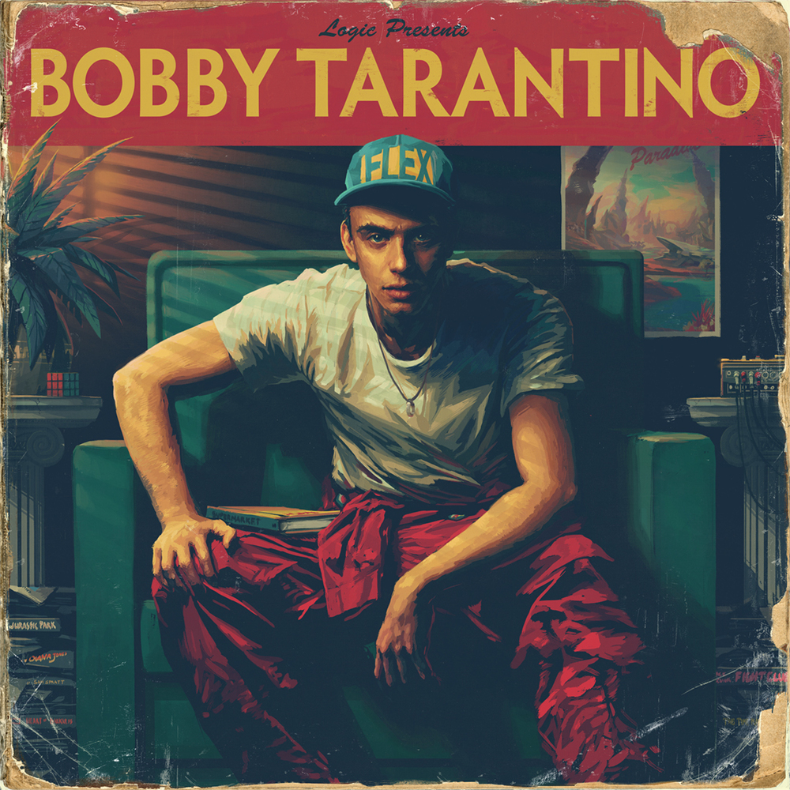

Sir Robert Bryson Hall II (born January 22, 1990), known by his stage name Logic, is an American rapper, singer, songwriter, and record producer. Raised in Gaithersburg, Maryland, Logic developed an interest in music as a teenager, and ventured into a musical career in early 2009 releasing Logic: The Mixtape under the name "Psychological", and releasing a mixtape titled Young, Broke & Infamous in 2010. He signed with Visionary Music Group, before releasing three more mixtapes over three years.
Logic’s 4th mixtape from (3rd official), was released on April 30th, 2012. The album art was taken from a photo of Frank Sinatra. On the mixtape, he addresses such topics as his future, his fans in various parts of the world, his father’s drug use, getting kicked out of school, and his mother getting stabbed, pretty heavy stuff.
Young Sinatra is the second mixtape by American rapper Logic. It is the third mixtape altogether. This is the first contribution to the Young Sinatra trilogy, preceding Young Sinatra: Undeniable and Young Sinatra: Welcome to Forever.
Young Sinatra: Welcome to Forever is the fourth mixtape in four years by recent Def Jam signee and DMV area rapper, Logic. Logic was recently featured on the cover of XXL Magazine’s annual Freshmen cover for 2013, which consists of the top ten new rappers in the game each year.
Logic sought to create an album that would stand out as "beautiful, musical and melodic" while also including "raw lyricism." In order to establish his desired sound, his lyricism is heavily introspective, analyzing himself by exploring his ambivalent outlook on his newfound fame, his family, feelings of self-consciousness, success, and his struggles with addiction. His goal was to provide an autobiography which explicitly detailed the scenarios and experiences that impacted him during his rise in the music industry.
The Incredible True Story has been characterized as an experimental musical work, with particular attention drawn to the running storyline detailed within the album.[4] It incorporates elements inspired by filmmaker Quentin Tarantino, including its non-linear storytelling, the satirical subject matter discussed between the characters, and its introduction of 20th century score pieces typically seen deployed by Tarantino.[5] Logic translated the storyline sonically by introducing scenes within the album, as well as offcuts within songs to help establish plot and context
Bobby Tarantino is the fifth mixtape by American rapper Logic. It was released on July 1, 2016, by Visionary Music Group and Def Jam Recordings. It was released to various digital platforms without prior announcement. Bobby Tarantino serves as Logic's first mixtape since Young Sinatra: Welcome to Forever (2013). The mixtape and its production was handled primarily by Logic and 6ix, with the duo focusing on a similar style to that of their previous independent projects, working on reinstating previous elements considered missing from Logic's commercial releases. The mixtape was preceded by the release of "Flexicution" and "Wrist", released ten days apart from one another.
Everybody is Logic’s highly-anticipated third studio album and his second audio-cinematic experience that released on May 5th, 2017 through Def Jam Recordings and Visionary Music Group. The album trailer first debuted on March 29, 2017, via Logic’s twitter: The album trailer takes place 300 years after the official release of Everybody where there is no more race or nationality, just humans united as one.